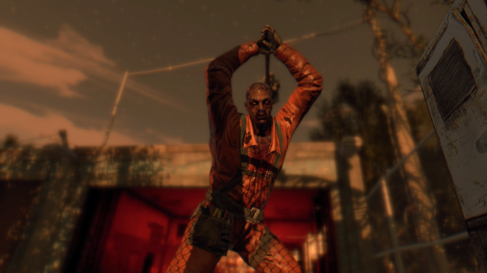

Goon
A physically large and strong infected that towers at roughly 8 feet tall, the goon carries a sledgehammer (typically a section of concrete with rebar acting as a handle) which it uses to smash into the ground and swing at the player.[1]. It can also use its left arm to bat the survivors away, which works as a secondary attack. Goons are much stronger than regular infected, but are very slow-moving and lack the ability to climb objects at all.
The goon's swing with the hammer is slow, and he takes a while to gather his strength to swing again, leaving him open to attack or time for the player to get away. Like the demolisher, it can kill other infected and can be used to the player's advantage but with every strike of the player, the goon is going to get more aggressive and start to attack quicker.
Goons come in 3 different ranks, which begin to appear as the player progresses through the game. The first Goon type wears an orange rubber industrial worker's uniform and is first encountered in the mission "First Assignment". The second type of Goon wears a black firefighter's outfit and is first encountered in the Volatile nest skyscraper in the mission "Siblings". The third type of Goon is shirtless with black pants and is missing much of its skin, exposing its muscles. These Goons appear once the player reaches Old Town. Each successive rank of Goon has more health, and the shockwave from when they slam their hammer into the ground has a larger radius, with the Rank 3 Goon's shockwave having a radius of nearly 20 feet.